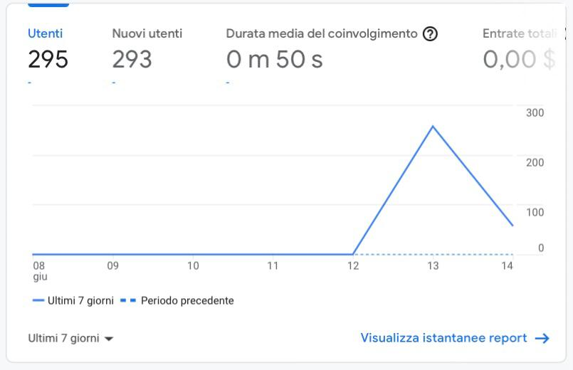
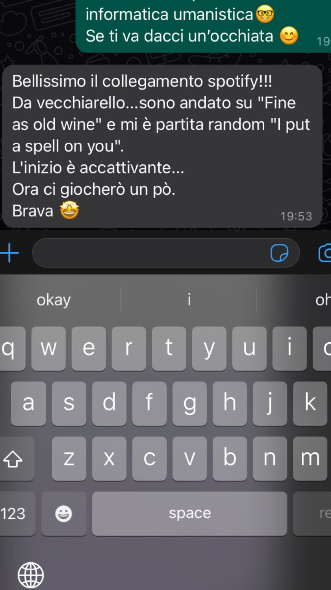

Documentazione
Abstract, Project Managment Plan & Comunication Strategy Plan.
ABSTRACT:
PlayMe è un progetto inedito che fornisce playlist create intorno all'utente, melodie studiate per accompagnare la vita di ogni giorno. Si tratta di una compilation di playlist in continuo aggiornamento senza l'utilizzo di alcun algoritmo, ma create e aggiornate personalmente, tenendo in considerazione esclusivamente i gusti e le richieste del fruitore.
PROJECT MANAGMENT PLAN
Benchmarking
1. Obiettivi
L’obiettivo è quello di fornire una piattaforma che possa accompagnare musicalmente la vita di ciascun utente e che possa essere utile a creare l’atmosfera perfetta in ogni occasione o situazione. Una piattaforma sulla quale l'utente possa fare affidamento, senza l'ausilio di algoritmi, ma incentrata sui gusti e le "vibes" desiderate da questo stesso.
2. Target utente
Ci si rivolge a persone di ogni età che nutrano passione per la musica o che semplicemente gradiscano un accompagnamento melodico per proprie avventure e/o momenti speciali. Non si fanno distinzioni di alcun genere purché gli utenti siano dotati di un apparecchio elettronico adibito ad una connessione internet.
3. Competitors
I principali competitors:
- Spotify: anche essa propone playlist create sia dagli utenti, che dal team editoriale o addirittura da >"algoritmi intelligenti" di raccomandazione. Tuttavia, le playlist offerte non sempre soddisfano a pieno il singolo utente e anzi ci si trova spesso a dover "skippare" molte canzoni (al massimo 6 canzoni se non si è abbonati a Spotify Premium).
La differenza, infatti, sta nel fatto che le playlist messe a disposizione in questa piattaforma vengono modificate e create personalmente, concentrandoci principalmente sulla personalizzazione dell'esperienza avvenuta per via dell'utente stesso.
- Amazon Prime Music: una piattaforma che si muove circa sulla stessa logica di Spotify con la differenza che non presenta limitazioni se si è già in possesso di un Abbonamento ad Amazon prime.
- You Tube: permette di ascoltare e condividere contenuti audio e video, ma si tratta di una piattaforma interessata ad un target e tematiche multimediali molto più vaste; con il risultato che l'ascolto dell'utente rischia d'essere interrotto da contenuti non richiesti. Questo progetto, invece, intende concentrarsi interamente sull'utente e sulle sue preferenze, offrendo una varietà di contenuti molto più specifici.
STRUTTURA E LAYOUT
1. Architettura del sito
Fig. 1: Rappresentazione della struttura ad albero del sito, comprensiva dei link interni (quelli in blu) e link esterni (quelli in fucsia).
2. Wireframe
Fig. 2: la home è suddivisa in sezioni in modo tale da favorire lo scrolling e incentivare la curiosità del fruitore.
Il footer e il menù sono uguali per tutte le pagine del sito eccetto nella pagina di "About Us" in cui il bottone "Sign in" è posto all'interno della navbar dropdown.
3. Look and feel
- Le pagine presentano uno stile semplice, pulito e minimalista in modo tale da garantire all'utente una navigazione rapida ed efficiente.
- La palette di colori è vivace: prevale il blu, il colore della serenità emotiva, dell'armonia e della calma; poi seguono delle sfumature di viola che evocano la fantasia e il lusso; delle sfumature di fucsia che rappresenta la grazia e la fermezza delle intenzioni e qualche accenno di arancione/giallo, ossia i colori della creatività che infondono calore ed energia.
- Ho utilizzato il "Source Sans Pro" sans-serif, che garantiscono limpidezza e chiarezza nell'esposizione del sito.
- In tutte le pagine si ripetono i footer (che connettono a link esterni) e la navbar così che l'utente possa spostarsi da una pagina all'altra senza complicazioni.
LINGUAGGI E STRUMENTI
1. Linguaggi
I linguaggi utilizzati sono: HTML5, CSS e Javascript
2. Strumenti
Sono stati utilizzati:
- templates.co per il template base del sito (html, css, scss, js)
- SublimeText 3 per la scrittura del codice HTML e CSS.
- Bootstrap per alcuni elementi della grafica.
- FontAwesome per le iocone.
- favicon.cc per la creazione dell'icona situata nel tab del browser, accanto al nome del sito.
- Google Chrome e la mia galleria personale per le immagini e gli sfondi.
- Google Fonts per il font del sito.
- Instangram, Twitter e Whatsapp per la promozione e condivisione della piattaforma.
- Github per la pubblicazione del sito.
- Google Analytics per visionare le statistiche della fruizione del sito.
COMUNICATION STRATEGY PLAN
1. Background
Quasi tutto il ventaglio di applicazioni o piattaforme di musica già presenti sulla rete dispongono di playlist che si basano sui gusti o su algoritmi di "raccomandazione" oppure su canzoni "cercate di recente" dai fruitori. Ciò che davvero manca davvero sul web è una piattaforma che si interfacci direttamente con l'utente e che ascolti le sue richieste, in modo da creare delle complation di brani che rispecchino esattamente le personalità di questi ultimi (dalla prima all'ultima nota!).
2. Obiettivi comunicativi
Il progetto ha come obiettivo quello di proporre artisti e brani nuovi seguendo le preferenze degli ascoltatori. Questa vuole essere una piattaforma che stimoli il confronto tra produttore e fruitore, che incoraggi la condivisione di contenuti così da ampliare la community e - perché no - supportare i "neo-appasionati" di musica.
3. Target audience e messaggio
Il sito è rivolto a chiunque, dai più grandi ai più piccini senza alcun tipo di distinzione; la cosa che deve accunuare la community è la passione per la musica. Musica come linguaggio universale, capace di emozionarci, di unirci e di abbattere le barriere socio-culturali.
4. Promozione
La promozione di PlayMe è stata via internet: tramite Stories e post su Instagram, un servizio di rete sociale che epermette agli utenti di scattare foto, applicarvi filtri e condividerle via web; gruppi chat su Whatsapp e via Twitter.
5. Valutazione dei risultati
Su un obiettivo di circa 150 visualizzazioni, a sole 48 ore dalla pubblicazione, il sito ne ha raggiunte 295 (quasi il doppio), contando: 291 utenti provenienti dall'Italia, 2 provenienti dal Belgio, 2 dagli Stati Uniti e uno dalla Spagna.

Fig. 3: panoramica di Google Analytics che mostra quanti utenti utenti hanno visitato il sito.
Fig. 4: mappa che evidenzia da dove gli utenti hanno visualizzato la pagina web.
Fig. 5: sono i dati di acquisizione degli utenti, ossia il modo con gli utenti sono entrati sul sito (es. tramite ricerca organica, digitando direttamente l'indirizzo, attraverso un link proveniente da un altro sito, ecc.).
Fig. 6: raccolta dati circa la panoramica di coinvolgimento degli utenti.
Il sito è stato condiviso e pubblicizzato attraverso storie e post sul mio profilo Instangram totalizzando: 436 visualizzazioni , 91 click sul link (presente nella storia) e 106 likes al post.
Il link è stato poi condiviso da altri utenti sempre su piattaforma instangram:
Fig. 7: Dati rilevati dalla storia Instagram condivisa da un altro utente.
Al termine delle 48 ore sono stati raccolti i feedback provenienti dalla piattaforma Instagram e dalle Chat su WhatsApp:

Fig. 8 e 9: Feedback Instagram.

Figure 10, 11, 12, 13, 14 e 15: Feedback WhatsApp.